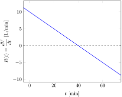
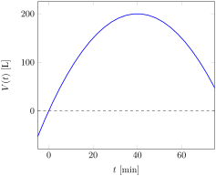

Suppose \(V\) measures the volume of water (liters) in a container and that \(V\) is a function of time \(t\) (minutes) such that the rate of change (liters per minute) is also a function of time defined by
\begin{equation*}
\frac{dV}{dt} = R(t) = 10-0.25t.
\end{equation*}
Describe the behavior of \(V\) and sketch a representative graph.
Solution.
The rate of change of the volume in the container, \(R(t)\) determines the behavior of the volume. Because \(R\) has a negative slope \(m=-0.25\text{,}\) the rate is decreasing. This tells us that the volume is a concave down function. Solving the inequalities \(R(t) \gt 0\) and \(R(t) \lt 0\) will allow us to see when the rate is positive or negative, which will imply when the volume is increasing or decreasing, respectively.
The inequalities are solved by solving the equation \(R(t)=0\) and then testing the inequalities in the resulting intervals.
\begin{gather*}
10-0.25t = 0 \\
-0.25t = -10\\
t = \frac{-10}{-0.25} = 40
\end{gather*}
Testing the sign of \(R(t)\) when \(t \lt 40\text{,}\) we find, for example \(R(20) = 10-0.25(20) = 5\text{,}\) that the rate is positive. Consequently, \(V\) is increasing when \(t \lt 40\text{.}\) On the other hand, testing the sign of \(R(t)\) when \(t \gt 40\text{,}\) such as \(R(60) = 0-0.25(60)=-5\text{,}\) we find that the rate is negative so that the volume is decreasing when \(t \gt 40\text{.}\)
The graph of \(R(t)\text{,}\) shown below, is consistent with these analyses. The graph is decreasing (corresponding to the negative slope), above the axis for \(t \lt 40\) and below the axis for \(t \gt 40\text{.}\)

The graph of the volume therefore needs to be concave down, increasing for \(t \lt 40\) and decreasing for \(t \gt 40\text{.}\) We do not know the starting volume (it wasn’t given), so the vertical positions of the graph do not presently have specific meaning. The initial value of 0 was chosen to represent whatever the starting volume happened to be. The graph of this functions is shown below.
